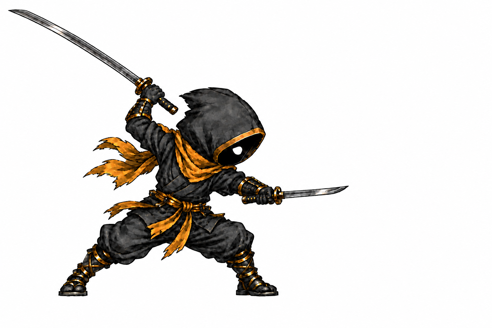
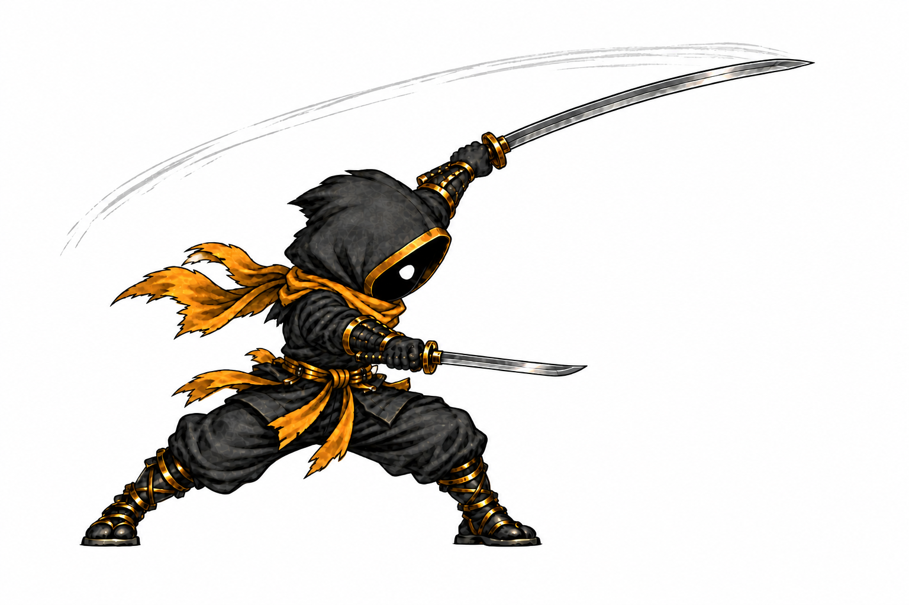
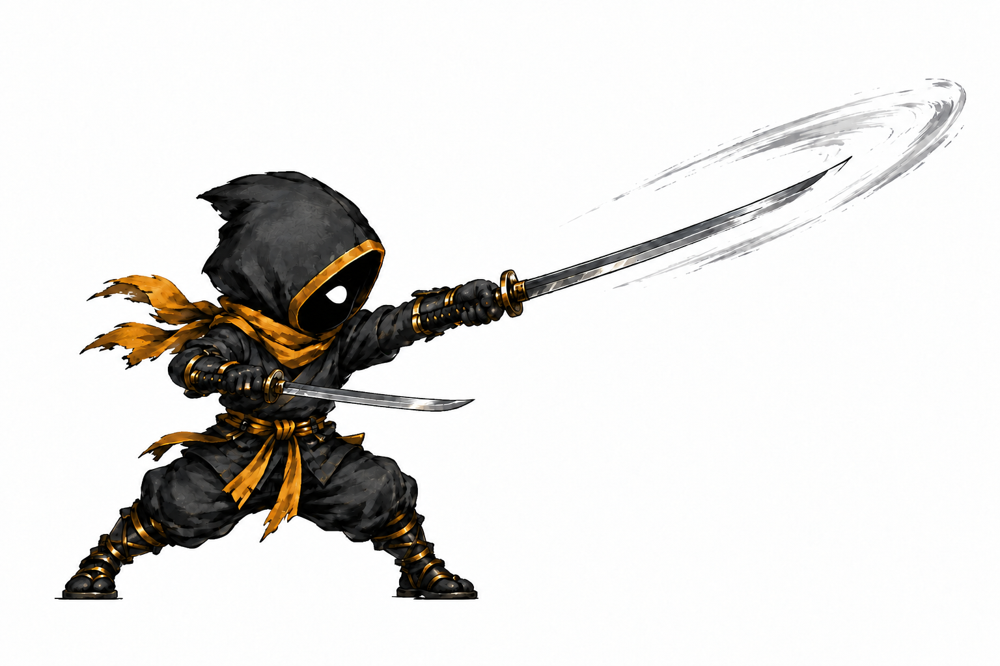
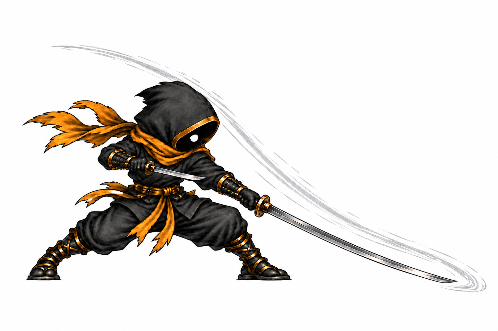
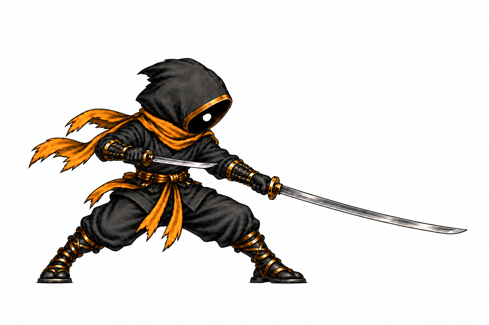

Kael · long and short sword heavy
Press Play to review the next motion pass. Frame 3 is Anthony's exact approved contact image. Frames 1, 2, 4, and 5 are new drawings for review. This player uses the current heavy attack's approximate 330 ms visual window. These are five distinct study keys, not packed game cells; apparent sword length and registration still need correction before installation.

1 / 5
Anticipation · review drawing
Frame strip
1 · windup · review



2 · acceleration · review

3 · contact · approved exact image

4 · follow-through · review

5 · recovery · reviewWhat to check
- The long katana carries the strike from windup through follow-through; the shorter sword remains on its own guard path.
- Kael keeps a black void face with one visible solid white eye and his approved black/gold body.
- At game size and mirrored, note any blade-length jump, foot pop, or pose that fails to connect. The player aligns the later floor positions only for comparison; the artwork needs its own registration pass.
Timing and registration data · Measured limitations · Approved attack-pose gallery